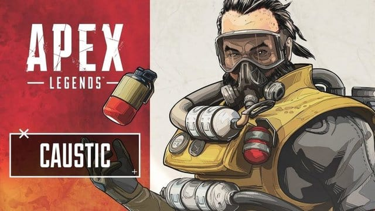

Bangalore
Profesyonel Asker olan Bangalore, oyuncuların rakiplerine hasar
vermek istedikleri zaman kullanabilecekleri bir silah uzmanı!
Kendisi gibi ailesi de asker olan Banglore, silahlı kuvvetlerde
görev yapan ve genç yaşından beri çok başarılı olan bir
askerdir.
Pasif Yetenek: Double Time Koşarken hasar aldığında daha
da hızlı koşmaya başlar.
Taktiksel Yetenek: Smoke Launcher 3'lü sis bombası
kullanma özelliğiyle istediği bölgeye sis bombardımanında
bulanbilir.
Üstün Yetenek: Rolling Thunder Belirli bir bölgeye
onlarca füze atabilir.
Bloodhound
Technological Tracker rolünü üstlenmiştir. Hızlı hareket ve
avlama özelliğine sahiptir.
Pasif Yetenek: Tracker Düşmanın geride bıraktığı izleri
rahatlıkla görebilir.
Taktiksel Yetenek: Eye of the Allfather Belirli bir alan
içinde 3 saniye içinde çevredeki izleri, tuzakları ve ipuçlarını
tespit edebilir.
Üstün Yetenek: Beast of the Hunt Taktiksel yeteğini daha
da geliştirebilir ve daha geniş bir alanda avcılık özelliklerini
kullanabilir.
Pathfinder
Forward Scout rolünü üstlenmektedir. Ölçme ve yakalama
becerileri sayesinde haritada fırtına gibi esmektedir. Yer
keşfetme konusunda uzmandır.
Pasif Yetenek: Insider Knowledge Güvenli bölgenin yerini
kolayca bulabilir.
Taktiksel Yetenek: Grappling Hook Bir yere kanca
fırlattığında o yere kısa sürede ulaşabilir.
Üstün Yetenek: Zipline Gun Taktiksel yeteneğini daha da
geliştirmiş ve Zipline Gun sayesinde gitmek istediği yere çok
daha kısa sürede gitmektedir.

Caustic
Toxic Trapper rolünü üstlenmektedir. Rakiplerini zehirli
gazlarla etkisiz hale getirebilmektedir. Caustic olmadan önce
gece gündüz yeni gazlar geliştirmek için çalışan bir bilim
adamıydı.
Pasif Yetenek: Nox Vision Zehirli gaz karakteridir,
atacağı zehirli gaz düşmanlarını büyük ölçüde etkiler.
Taktiksel Yetenek: Nox Gas Trap Zehirli gaz tuzaklarını
her yere kurabilir, çevreye yayılan zehirli gazlar düşmanları
öldürüyor.
Üstün Yetenek: Nox Gas Grenade Çok yoğun bir zehirli
gaz bombası atabiliyor.
Gibraltar
Shielded Fortress rolünü üstlenmiştir. Kendine özgü koruma
yeteneği Gibraltar'ı önemli bir savunma karakteri yapmaktadır.
Pasif Yetenek: Gun Shield Yere düştüğünde, rakip
mermileri savuşturmak için kalkan görevi görür.
Taktiksel Yetenek: Dome of Protection 15 saniye boyunca
hasar verilemeyen bir koruma kalkanına sahiptir.
Üstün Yetenek: Defensive Bombardment Dilediği bir yeri
işaretleyip oraya füze yollayabilir.
Mirage
Holografik Trickster rolünü üstlenmiştir. Mirage'nin sinsi
gizlenme kabiliyeti vardır. Öne çıkmayı ve dikkat çekmeyi seven
Mirage, annesiyle birlikte en büyük tutkusu olan sanal makinalar
geliştirmektedir.
Pasif Yetenek: Encore! Ultisini(üstün yetenek)
kullandıktan sonra 5 saniye boyunca gizlenebilir.
Taktiksel Yetenek: Psyche Out Düşmanı şaşırtmak için
karakterin aynısını yem olarak gönderebilir.
Üstün Yetenek: Vanishing Act Düşmanı şaşırtmak ve
rahatsız etmek için sahte Mirage'lar gönderir.
Wraith
Inter-dimensional Skirmisher rolünü üstlenmiştir. Mekanlar ve
boşluklar arası seyahat edebilme özelliğine sahiptir.(Çok yaygın
seçilme potansiyeli vardır.)
Pasif Yetenek: Voices from the Void Yüksek volümlü ve
uyarıcı bir ses ile rakiplerini rahatsız eder.
Taktiksel Yetenek: Into the Void Belli bir süre boyunca
görünmez olabilir.
Üstün Yetenek: Dimensional Rift Tüm takım için kara
delikler açabilir.
{kind=link}
{kind=link}
{kind=link}
{kind=link}
{kind=link}
{kind=link}
{kind=link}